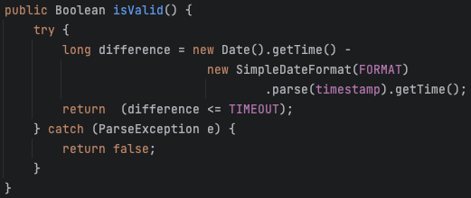

Introduction
Lo Sprint1 si impegna ad analizzare il core-business delineato dallo Sprint0, ovvero la gestione delle richieste e il trasporto dei carichi dalla INDOOR alla PORT. Queste funzionalità sono espresse dai macro-componenti ColdStorageService e Transport Trolley, che saranno approfonditi in questo Sprint identificando punti critici e valutando i costi di eventuali soluzioni.Requirements
Descrizione del
TemaFinale23
Goals dello Sprint1 :
- Identificare ed analizzare i problemi relativi ai requisiti che coinvolgono ColdStorageService e Transport Trolley
- Formulare un modello del sistema composto dal ColdStorageService e dal Transport Trolley e quindi fornire un'architettura logica del sistema
- Realizzare ai fini di test un simulatore in grado di interfacciarsi con il sistema
- Testare il sistema
Requirement analysis
Chiarimenti del committente
L'interazione con il committente ha permesso di chiarire alcuni aspetti del progetto:- Qualora un Fridge Truck debba scaricare un carico superiore alla portata massima
del Transport Trolley, per il momento si adotta la politica di rifiutare a priori tale
richiesta.
Il committente richiede tuttavia un'analisi dei costi relativa allo scenario in cui il Transport Trolley accetti carichi che superano la sua capacità massima di carico, obbligandolo così ad effettuare più giri per soddisfare la richiesta di store. - Quando il Transport Trolley ha completato tutte le richieste al momento presenti nel sistema torna alla HOME. Se durante il tragitto dalla ColdRoom alla HOME si presenta una nuova richiesta di azione di carico e scarico il Transport Trolley deve avere l'accortezza di direzionarsi direttamente alla INDOOR, senza quindi passare prima dalla HOME.
- Il Transport Trolley per raggiungere una determinata posizione della Service Area non deve per forza percorrere sempre la strada ottimale, ma non dovrebbe nemmeno fare giri particolarmente inefficienti. Quindi come conclusione vi è un minimo di tolleranza nei suoi spostamenti.
Chiarimenti con il committente
-
I Ticket sono al momento rappresentati da una sequenza di numeri corrispondenti al "timestamp" della
richiesta di store.
Un problema sorge da questa scelta di rappresentazione: è semplice, univoco ma anche ambiguo. Un Truck driver potrebbe inserire un Ticket che non gli appartiene, per sbaglio o intenzionalmente, e il sistema non sarebbe in grado di accorgersi dell'errore. Ciò potrebbe anche portare, nel caso in cui un Truck acceda con un Ticket non suo e un peso diverso da quello richiesto, a un errore di conteggio del peso interno alla ColdRoom.
Una possibile soluzione è che il conducente oltre a inserire il Ticket includa un secondo valore, come ad esempio il peso del carico che trasporta o un proprio identificativo che utilizzerà sia per la richiesta di store che una volta giunto alla INDOOR.
Il Servizio può dare per scontato che ogni Truck adopererà solo il proprio Ticket o il committente richiede che in un futuro Sprint venga effettuata una ulteriore analisi del problema e dei costi delle possibili soluzioni?
Sistema
Lo Sprint1 prevede l'interazione tra due componenti principali: ColdStorageService e Transport Trolley.Ai fini di test includiamo nelle interazioni anche il componente di test MockServiceAccessGUI, che rappresenta in questo Sprint un componente proattivo che fungerà da simulatore, mentre la vera GUI del servizio verrà analizzata e introdotta nello Sprint successivo, lo Sprint2.
Analisi
Dai requisiti espressi nel Tema Finale e dall'analisi già effettuata nello Sprint0, in questo Sprint occorre analizzare le entità:- ColdStorageService, che si occupa di gestire le richieste di store e i movimenti del Transport Trolley
- Transport Trolley, che gestisce le richieste del ColdStorageService ed invia comandi di più basso livello al BasicRobot23
- BasicRobot23, entità che riceve comandi dal Transport Trolley e guida il DDR-Robot
Service Area (Requisito 1)
Data la descrizione della stanza e l'immagine fornita dal committente, si è deciso di modellare la Service Area come un rettangolo, circoscritto da 4 mura, contentente due ostacoli fissi di cui uno è la Cold Room.
- HOME: area della stessa dimensione del Transport Trolley, in cui il TransportTrolley si trova all'avvio del sistema
- INDOOR: zona lungo il perimetro, dove il TransportTrolley deve recarsi all'arrivo di un ticket valido
- PORT: zona che identifica il punto di scambio tra il TransportTrolley e la ColdRoom. Per il robot risulta un ostacolo, che andrà evitato durante il movimento.
TransportTrolley e DDR-Robot (Requisito 2)
Il TransportTrolley e il DDR-Robot sono due entità distinte, ma che interagiscono tra loro, per effettuare le operazioni di carico e scarico.In particolare:
- Carico della merce presso l'INDOOR
- Trasporto della merce dall'INDOOR alla PORT
- Scarico della merce presso la PORT
Note
Il committente ci fornisce:- La mappa della stanza
- BasicRobot23
Analisi del Problema
L'esplorazione del core-business del servizio porta all'analisi dei due macro componenti, TransportTrolley e ColdStorageService, a cui corrispondono indipendenti analisi dei problemi ed osservazioni.Transport Trolley
Il committente mette a disposizione il software BasicRobot23, che permette di comandare un DDR-robot e introdurre il concetto di griglia con cui ci risulta possibile identificare la posizione del TransportTrolley e degli ostacoli all'interno della mappa con un sistema a coordinate. È fornito inoltre un Planner che individua il path che il DDR-Robot deve percorre per raggiungere una determinata posizione (evitando gli ostacoli) ed un Path Executor che esegue il path calcolato dal planner.(Raccolta di tutti i comandi utilizzabili sul BasicRobot23)
È dunque possibile rappresentare la mappa della stanza come una Matrice MxN, ovvero come una griglia di coordinate.

È possibile identificare la posizione del TransportTrolley e degli ostacoli all'interno della mappa come segue:
- HOME -> (0,0)
- INDOOR -> (0,4)
- PORT -> (4,3)
- OSTACOLO -> (2,3)
ColdStorageService
Per quanto riguarda i meccanismi di gestione delle richieste in arrivo, le problematiche da affrontare sono principalmente tre.1 - Concomitanza di richieste da parte di Fridge Truck diversi
Il committente a seguito della review dello Sprint0 ha confermato che i Ticket vengono inseriti dai conducenti dei Fridge Truck solo presso la zona Indoor.Ciò lascia comunque la questione di un eventuale inserimento di più Ticket da parte di più conducenti dei Fridge Truck nel caso in cui l'INDOOR presenti più postazioni e dunque più conducenti vengano serviti in contemporanea. Si è deciso di non permettere questa opzione, e quindi i conducenti dei Truck devono mettersi "in coda" in attesa del proprio turno. Questo perchè:
- il sistema è in grado di servire un carico per volta
- nell'attesa del completamento della richiesta del primo Truck in fila, altri potrebbero andare oltre il limite di tempo del proprio Ticket, che però essendo già stato inserito (e confermato) risulterà ancora valido.
Il sistema non ammette una coda di Truck alla zona Indoor.
Dopo che il Transport Trolley da conferma al Fridge Truck tramite messaggio "charge taken" di aver preso in
carico la richiesta, si dirige verso la ColdRoom impiegando un certo tempo. Il Fridge Truck è allora libero di
lasciare la zona INDOOR, e quindi il servizio potrebbe accettare un nuovo Ticket.Individuiamo quindi due Ticket che in contemporanea ColdStorageService può gestire:
- quello relativo al carico che il Transport Trolley sta trasportando -> WorkingTicket
- quello del Fridge Truck in attesa alla zona INDOOR -> WaitingTicket
Il sistema può accettare un Ticket mentre il TransportTrolley sta ancora
terminando la richiesta
del precedente. Il servizio perciò gestisce al massimo due Ticket contemporaneamente.
La sequenza di interazioni è quindi la seguente:
- Quando un Fridge Truck inserisce il proprio Ticket, nel caso il servizio dia conferma di validità, viene chiesto al TransportTrolley di recarsi presso la zona carico. In questo caso diciamo che il Ticket è in attesa (Waiting).
- Quando il Trolley dà conferma di Charge Taken e si dirige verso la ColdRoom, il Ticket viene segnato come in lavorazione (Working) e il Fridge Truck è libero di abbandonare la zona INDOOR.
- In questo momento un'altra richiesta di inserimento Ticket può essere gestita dal sistema. Questo nuovo Ticket rimarrà in stato Waiting fino a che il TransportTrolley non avrà depositato il carico corrente e richiesto al servizio se è presente un nuovo Ticket.
Si può pensare che il TransportTrolley comandi indirettamente il passaggio dei
Ticket da Waiting a Working, comunicando a ColdStorageService quando ha preso il carico dal Truck e quando
lo ha depositato nella ColdRoom.
2 - gestione stato ColdRoom e richieste di storage
Dato il tempo materiale di spostamento del carico da INDOOR a ColdRoom dovuto al movimento del TransportTrolley, e il grado di variabilità nel tempo tra richiesta di storage e inserimento del Ticket da parte dei Fridge Truck, serve una strategia per l'aggiornamento della capacità della ColdRoom stessa.Non possiamo dare per scontato che ogni scarico vada a buon fine: un Truck potrebbe chiedere un Ticket e non presentarsi mai, oppure il Ticket stesso potrebbe scadere. Anche nel caso in cui la richiesta venga correttamente presa in carico, potrebbe comunque verificarsi un malfunzionamento al Transport Trolley che gli impedisca di arrivare alla Cold Room e dunque di terminare l'azione di carico e scarico. Il momento ideale per aggiornare il peso all'interno della ColdRoom è per ciò a termine di un deposito avvenuto con successo.
La quantità contenuta nella ColdRoom va aggiornata a deposito avvenuto.
Ciò però pone un altro problema: se un Truck richiede di scaricare un certo peso prima che vengano completate le
altre
richieste, si potrebbe verificare una situazione di "overbooking" della ColdRoom.Decidiamo di considerare ogni richiesta di Storage non ancora completamente soddisfatta come una prenotazione di una certa quantità di peso nel frigo. Il controllo all'arrivo di ogni richiesta di store prenderà in considerazione sia il peso effettivo che quello prenotato. Nel caso in cui la ColdRoom appaia teoricamente piena, il servizio prima di respingere la richiesta ha premura di controllare eventuali Ticket scaduti, e conseguentemente liberare lo spazio allocato. Qualora non siano presenti Ticket scaduti, la richiesta verrà respinta.
Questo meccanismo potrà portare il servizio a respingere carichi che in breve tempo si sarebbero rivelati accettabili, ma si tratta di casi molto rari. Con questo sistema di allocazione logica del peso siamo sicuri di non mandare mai il servizio in stato di overbooking, accettando solo richieste che si è sicuri di poter gestire.
Solo quando il TransportTrolley avrà comunicato di aver depositato nella ColdRoom il carico che attualmente sta gestendo verrà aggiornato il peso del contenuto reale del frigo e di conseguenza deallocato quello prenotato.
I Ticket hanno anche la funzione di prenotazione di spazio all'interno della
Cold Room
La validità dei Ticket può essere verificata solo quando tale informazione
potrebbe influenzare l'accettazione dei Fridge Truck successivi.
I Ticket sono univocamente distinti da una sequenza di numeri pari al timestamp
di quando la
richiesta è stata effettuata, e vengono gestiti unicamente da ColdStorageService.
Va gestito lo scenario in cui un conducente inserisca un Ticket errato, ovvero quando, magari per un errore di
battitura, carica un Ticket inesistente.
In questo caso, il sistema respinge la richiesta del conducente il quale dovrà abbandonare l'INDOOR. Il
conducente dovrà essere notificato che il motivo della mancata accettazione è per l'inesattezza del Ticket.
Il sistema fornisce indicazioni al conducente sul motivo per cui la
richiesta è stata respinta
3 - comunicazione con TransportTrolley
Essendo il Transport Trolley l'entità che si occupa di muovere il DDR-Robot e che quindi è a conoscenza del metodo di rappresentazione a coordinate della Service Area, è consigliabile che la ColdStorageService gestisca solo le richieste ad alto livello comandando il Transport Trolley tramite i comandi:- Andare in INDOOR, per soddifare la richiesta di un Fridge Truck
- Andare in HOME, se non ci sono Fridge Truck da servire
- Da dove si trova alla INDOOR per caricare gli alimenti
- Dalla INDOOR alla PORT
ColdStorageService ha una visione astratta della zona di movimento del Robot: ne
conosce solo i punti di interesse.
Ricordiamo che per il momento il committente desidera un servizio che rifiuti i Fridge Truck che
richiedano
uno scarico di
alimenti che supera la portata
massima del Transport Trolley. Quindi, quando la ColdStorageService ordina al Transport
Trolley di caricare/scaricare
un carico, lo effettua senza passarli alcun parametro. Questo andrebbe contraddetto nel caso il sistema
accettasse
carichi da parte dei Fridge truck che
superano la portata massima del robot, obbligandolo ad effettuare più giri per la medesima richiesta. In
questo caso infatti bisognerebbe tenere conto del peso totale di carico da trasportare, in modo da riuscire ad
identificare il
numero di giri necessario per soddisfare la richiesta. Il Committente ha richiesto una analisi dei costi
per valutare successivamente se supportare anche questa
casistica.Analisi dei costi
- Il sistema risulterebbe di maggiore complessità rispetto al modello creato. Occorrerebbe infatti aggiungere la logica riguardante il numero di giri che il Transport Trolley deve fare. Occorrerebbe anche valutare se la decisione sul numero di giri da effettuare debba essere di competenza della ColdStorageService o del TransportTrolley.
- A livello prettamente economico il sistema potrebbe risultare meno redditizio, poichè il TransportTrolley impiegherebbe più tempo per soddisfare una richiesta, e quindi il numero di richieste soddisfatte in un'unità di tempo sarebbe minore. Resta però da valutare con il committente se ciò non venga controbilanciato dall'impatto dato dal respingere alcuni Truck.
- Effettuando più giri occorrerebbe stimare la tempistica media di un giro del TransportTrolley, in modo da poter valutare il tempo di attesa di un FridgeTruck e dunque riuscire a fissare il Ticket Expiration Time in modo da far scadere il minor numero di Ticket possibile. Questo andrebbe a complicare la logica di gestione dei Ticket.
Per il momento qualunque richiesta eccedente il peso massimo trasportabile dal DDR
Robot verrà respinta
Interazioni
| Messaggio | Mittente | Destinatario | Semantica messaggio | Descrizione |
|---|---|---|---|---|
| insertticket | ServiceAccessGUI | ColdStorageService | Request | All'inserimento del ticket il conducente del Fridge Truck deve sapere immediatamente l'esito dell'inserimento. Conterrà il numero del ticket inserito. |
| replyinsertticket | ColdStorageService | ServiceAccessGUI | Reply | Risposta alla insertticket, conterrà l'informazione della validità del ticket precedentemente inserito. |
| storerequest | ServiceAccessGUI | ColdStorageService | Request | Il conducente del Fridge Truck vuole sapere immediatamente se c'è posto per il suo carico. La richiesta conterrà il numero di Kg del carico da scaricare. |
| replystorerequest | ColdStorageService | ServiceAccessGUI | Reply | Risposta alla storerequest, conterrà il numero del ticket nel caso il carico sia stato preso in considerazione, altrimenti bisogna comunicare che la richiesta è stata rifiutata dal sistema. |
| chargedeposited | transporttrolley | ColdStorageService | Request | Quando il Transport Trolley comunica che ha scaricato il carico alla ColdRoom deve necessariamente sapere quale sarà la sua successiva mossa: se procedere alla INDOOR per soddisfare un altro Fridge Truck oppure se andare in HOME perché non si sono richieste sospese nel sistema. |
| replychargedeposited | ColdStorageService | transporttrolley | Reply | Risposta alla chargedeposited, conterrà la prossima mossa del Transport Trolley: se andare alla INDOOR per soddifare un altro Fridge Truck oppure se andare in HOME perché non si sono richieste sospese nel sistema. |
| chargetaken | transporttrolley | ColdStorageService | Dispatch | Il Transport Trolley deve notificare di aver caricato il carico che si trovava alla INDOOR, senza aspettarsi in cambio alcuna informazione. |
| chargetaken | ColdStorageService | ServiceAccessGUI | Dispatch | Il ColdStorageService propaga il messaggio chargetaken alla ServiceAccessGUI in modo tale da informare il conducente del Fridge Truck che il suo carico è stato preso dal Transport Trolley e quindi se ne può andare. |
| gotoindoor | ColdStorageService | transporttrolley | Dispatch | Il ColdStorageService notifica al Transport Trolley di occuparsi di soddisfare il Fridge Truck. Non rimane ad aspettare una conferma, poichè mentre il Transport Trolley lavora il ColdStorageService deve essere in grado di accettare le richieste che arrivano nel frattempo. |
| coldroomdata | ColdStorageService | ServiceAccessGUI | Dispatch | Il ColdStorageService comunica in maniera fire-and-forget alla ServiceAccessGUI il peso corrente della ColdRoom ogni volta che questo varia. |
Architettura logica
Codice QAK per la modellazione del sistema: ColdStorageService.qak
Il sistema da noi modellato, presenta la seguente architettura logica:
Test plans
| Test | Entità coinvolte | Scenario | Comportamento atteso |
|---|---|---|---|
| UpdateWeight | ColdStorageService | La ServiceAccessGUI richiede un storerequest con un carico di FW Kg e successivamente un insertticket. | Quando la ColdStorageService riceve chargedeposited ci si aspetta che il suo contatore del peso presente nella ColdRoom sia stato aggiornato con FW Kg in più. |
| TransportTrolleyServiceTruck | ColdStorageService TransportTrolley |
La ColdStorageService richiede tramite la gotoindoor al Transport Trolley di andare alla INDOOR per soddisfare una richiesta di un Fridge Truck. | La ColdStorageService dopo un lasso di tempo non troppo lungo riceve un messaggio di chargetaken seguito, non immediatamente, da un messaggio chargedeposited. |
| MultipleRequestsHandling | ColdStorageService | Dalla ServiceAccessGUI vengono effettuate alla ColdStorageService due richieste consecutive: un insertticket e successivamente, dopo aver ricevuto il messaggio replyinsertticket di validità del ticket, un storerequest con peso inferiore alla capacità massima del robot. Questo test serve a verificare se il sistema accetta richieste mentre si sta servendo una richiesta di un Fridge Truck. | La ServiceAccessGUI alla seconda richiesta di storerequest riceve una risposta affermativa ed entrambi i Ticket vengono serviti dal TransportTrolley |
| TicketInexistent | ColdStorageService | La ServiceAccessGUI inserisce un Ticket inesistente (sequenza randomica di caratteri). | La ServiceAccessGUI riceve un messaggio ticketrejected che dichiara l'invalidità del ticket. |
| TicketExpired | ColdStorageService | La ServiceAccessGUI richiede un storerequest e successivamente dopo TICKETTIME secondi invia la richiesta di insertticket. | La ServiceAccessGUI riceve un messaggio ticketrejected che dichiara l'invalidità del ticket. |
| StoreTooBig | ColdStorageService | La ServiceAccessGUI richiede un storerequest per un peso che eccede la capacità massima della ColdRoom. | La ServiceAccessGUI riceve un messaggio storerejected che dichiara la negazione della richiesta. |
| EcceedingDDRCapacity | ColdStorageService | La ServiceAccessGUI richiede un storerequest per un peso che eccede la capacità massima del DDR-Robot. | La ServiceAccessGUI riceve un messaggio storerejected che dichiara la negazione della richiesta. |
Project
La struttura delineata nell'Analisi del Problema è ritenuta adeguata. La progettazione si concentra principalmente sul sistema di prenotazione del carico, dato che le interazioni con il TransportTrolley sono già coperte dal sistema a stati del QaK.La gestione della ColdRoom è responsabilità esclusiva di ColdStorageService, e per il momento si sceglie di includere la logica operativa direttamente nell'attore senza creare un POJO (Plain Old Java Object) ad hoc.
Per implementare la gestione dei Ticket ed in particolare i Keypoint 1, 2, 3, 5 e 6, si è deciso invece di utilizzare un classe java Ticket che contenga le informazioni relative ai singoli ticket ed una classe java TicketManager che li gestisca. Entrambe le classi sono modellate come POJO.
Ticket.java
Questa classe rappresenta il Ticket stesso. Si occupa di mantenere il Timestamp di creazione del Ticket (corrispondente ad un ID univoco) e il Timeout che rappresenta dopo quanto tempo il Ticket deve scadere.Il campo Timeout è passato al costruttore dell'oggetto, non hardcoded; in questa maniera, il tempo di scadenza del Ticket non solo risulta personalizzabile secondo le indicazioni del Committente, ma è anche possibile esprimere scadenze diverse per Ticket diversi.
Questa classe presenta solo i metodi Getter, essendo entità di sola lettura dopo la loro creazione, e una funzione isValid che restituisce Vero o Falso se il Ticket è valido o scaduto, ovvero se la differenza tra il Timestamp attuale e quello generato al momento di creazione del Ticket è maggiore o minore del tempo di scadenza.
Il timestamp è generato dalla classe SimpleDateFormat, che permette anche la conversione da String a Date e viceversa.
Anche il formato del timestamp è modificabile esternamente, in attesa della conferma da parte del committente del modello scelto.
Dettaglio funzione isValid

UML Ticket

TicketManager.java
Il TicketManager è la classe che gestisce i Ticket. L'attore ColdStorageService ne crea una istanza, in modo tale da averne esclusivamente accesso. Si è scelto di estrarre la logica relativa alla gestione dei Ticket per poter avere più flessibilità, sia per eventuali modifiche alla logica operativa che eventualmente nel caso si decida in un futuro di creare più istanze Manager.Il TicketManager in particolare si occupa di creare i Ticket, di verificare la loro validità e di eliminarli una volta scaduti. Per fare ciò il TicketManager contiene l'insieme dei Ticket come Map con chiave il timestamp del Ticket stesso, oltre ai relativi metodi per crearne o eliminarne.
Questi due tipi di Ticket hanno a corredo una serie di metodi per ottenerli (sia come timestamp che come oggetto) e verificarne lo stato.
UML TicketManager

Istruzioni per l'utilizzo del software
Posizionarsi alla radice della cartella ColdStorageService ed effettuare tutte le operazioni necessarie per avviare il BasicRobot insieme all'ambiente di simulazione.Effettuare dunque i seguenti passaggi:
Per fare partire i container Docker che contengono il BasicRobot effettuare da riga di comando:
docker-compose -f webbasicrobot23.yaml up
Una volta che il Basicrobot è in ascolto accedere al virtualRobot tramite Browser a:
localhost:8020
Dopo aver fatto questi preparativi, avendo l'accortezza di non fare andare la schermata del virtualRobot in
background, posizionarsi dentro alla cartella sprint1.coldstorageservice e da riga di comando eseguire:
gradle run
Conclusioni
Il Core Business del sistema, composto dal ColdStorageService e Transport Trolley, è stato realizzato e testato, grazie alla introduzione di un simulatore della ServiceAccessGUI necessario per imitare le interazioni dell'utente con il servizio.
Gli output dello sprint1 sono:
- ColdStorageService
- TransportTrolley
- MockServiceAccessGUI
Goals Sprint 2
Si possono definire in seguito i goal relativi allo Sprint2:- Identificare ed analizzare tutti i problemi relativi ai requisiti che coinvolgono la ServiceAccessGUI
- Integrare al sistema realizzato nello Sprint1 la ServiceAccessGUI, che permette l'interazione tra il conducente del Fridge Truck ed il servizio ColdStorageService
- Realizzare l'interfaccia grafica
- Testare il sistema
By
Tassinari Gabriele, email: gabriele.tassinari2@studio.unibo.it
Baraldi Leonardo, email: leonardo.baraldi@studio.unibo.it
Koss Krystian, email: krystian.koss@studio.unibo.it


GIT repo: https://github.com/4utotune/ColdStorageService/
Tassinari Gabriele, email: gabriele.tassinari2@studio.unibo.it
Baraldi Leonardo, email: leonardo.baraldi@studio.unibo.it
Koss Krystian, email: krystian.koss@studio.unibo.it
GIT repo: https://github.com/4utotune/ColdStorageService/